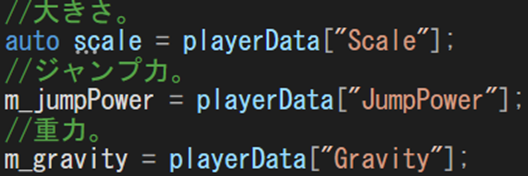
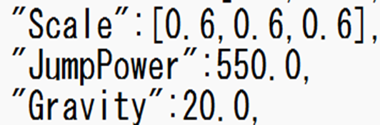

作品概要
タイトル：CrazyGuys（クレイジーガイズ）
ジャンル：3Dパーティーアクションゲーム
制作人数：1人
制作期間：2025年8月 ～ 2026年1月
プレイ人数：1人 ～ 4人
対応ハード：PC（Windows 11）
対応デバイス：
- キーボード
- Xbox 360 コントローラー（推奨）
使用言語：C++ / HLSL
開発環境・使用ツール
エンジン：学内制簡易エンジン（DirectX 12）
開発環境：Visual Studio 2022
3Dモデル
- Unity Asset Store
- 3ds Max
- Unity
画像制作
- Adobe Photoshop 2024
- ChatGPT
エフェクト：Effekseer
サウンド：AudioStock
バージョン管理：GitHub
タスク管理：Notion
その他使用ツール
- Adobe Premiere Pro 2025
- ChatGPT
- GitHub Copilot
GitHub URL：
https://github.com/sakaifuga0807/CrazyGuys
ゲーム内容
『CrazyGuys』は、
他のプレイヤーよりも早くゴールに到達することを目的とした、最大4人対戦の3Dアクションゲームです。
ステージ上には以下のようなギミックやトラップが配置されています。
- プレイヤーを弾き飛ばすギミック
- タイミングを見極めて進むトラップ
これらを乗り越えるためには、
操作精度と状況判断が重要になります。
プレイ動画（PV）
工夫点とアピールポイント
1. 責務分離を意識したクラス設計
プレイヤーキャラクターの実装において、「状態管理・挙動管理」と「入力処理」を分離して設計しました。
クラス構成
- Player：状態遷移管理 / アニメーション制御 / 当たり判定処理
- PlayerControl：プレイヤー入力処理
- AIControl：AI操作時の入力処理
入力処理を Player から切り離すことで、人操作と AI 操作を同一インターフェースで切り替え可能な構成を実現しています。

2. 外部ファイルを用いたパラメータ管理
ゲーム内で使用する各種設定値は Json ファイルを用いて外部管理しています。
- プレイヤーの移動速度
- ジャンプ力
- 各種ゲームバランス関連数値
コードを修正せずにバランス調整が可能となり、保守性と可読性を向上させています。
 3. Json によるステージオブジェクト生成（データドリブン設計）
ステージ上の全ギミックを Json ファイルから生成するデータドリブン設計を採用しています。
{
"Position": [0.0, 200.0, -500.0],
"Rotation": [0.0, 0.0, 0.0, 1.0],
"Scale": [1.0, 1.0, 1.0],
"Speed": 2.0,
"Range": 45.0
}フェード演出の設計と実装（FadeManager）
画面遷移時の違和感を抑えるため、FadeManager をシングルトンとして実装しています。
FadeManager::GetInstance()->FadeOut(1.0f,[this]()
{
ChangeState(enState_InGame);
});
5. サウンド管理の設計と実装（SoundManager）
BGM / SE を SoundManager によって一元管理し、Json から定義を読み込む設計を行っています。
SoundManager::Get().Play("GameStart");今後の展望
オフスクリーンレンダリングを用いた画面分割対応
各プレイヤー視点をレンダーターゲットに描画し、 UV分割によって柔軟な画面分割マルチプレイを実現する構想です。